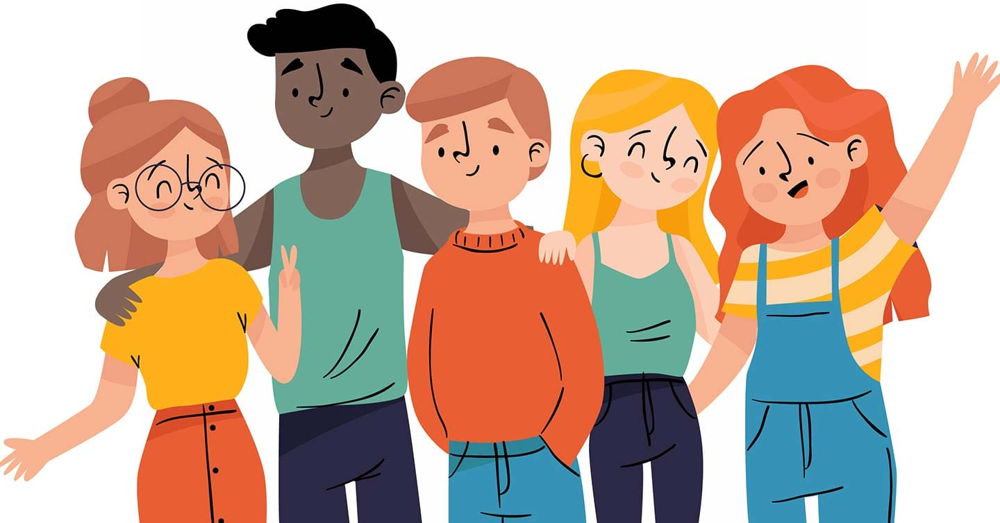

La Tolerancia y la Diversidad en el Aula
Aceptar las diferencias, ideas y ritmos de aprendizaje de los demás es clave para la convivencia.
¿Qué es la Tolerancia?
La tolerancia es el respeto activo y la aceptación de la diversidad de culturas, formas de expresión, puntos de vista y la condición humana en general. En el ámbito educativo, es fundamental para que todos los estudiantes se sientan **valorados e incluidos**.
"La tolerancia es la virtud que hace posible la paz y contribuye a sustituir la cultura de guerra por la cultura de la paz." - UNESCO
Practicando la Tolerancia
Paciencia en el Diálogo
Permitir que los compañeros o maestros terminen de exponer sus ideas, incluso si no estamos de acuerdo, antes de responder.
Aceptación de Ritmos
Comprender que cada alumno tiene su propio tiempo para aprender un tema sin emitir juicios negativos.
Respeto a la Identidad
Aceptar la forma de ser, la cultura y las decisiones personales de los demás, siempre que no dañen a nadie.
Beneficios de la Tolerancia
- ✅ Fomenta la Inclusión: Crea un ambiente donde todos se sienten parte del grupo.
- 🤝 Reduce el Conflicto: Las discusiones se transforman en diálogos constructivos.
- 🧠 Estimula el Pensamiento Crítico:** Al exponerse a diversas ideas, se fortalece la propia capacidad de análisis.
- 📈 Mejora el Rendimiento: La tranquilidad emocional favorece la concentración y el estudio.
La tolerancia no es indiferencia; es la convicción de que la diversidad nos enriquece como sociedad y que el aula es un reflejo de ese mundo.
